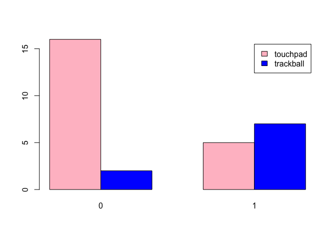

Researching The Effect Of Disability On Device Preference.
Project purpose.
The user research team conducted an experiment design to find out whether disability has an effect on the device preference. There are two groups of users, one with disability and another without. They were asked to use two different devices, touchpads and trackballs as computer input devices, and pick their preference. Now that the data is collected, the objective is to conduct a statistical testing to see whether disability has a signifcant effect on device preference.
Assumptions about the dataset:
- The experiment is with well-controlled and conducted appropriately by the user research team.
- The samples represent the population with proper stratification and sampling method.
- The user research team follows a appropriate procedure when conducting the experiment.
1 Explore and familiarise with the dataset.
df.device = read_csv("csv/deviceprefs.csv")## Parsed with column specification:
## cols(
## Subject = col_double(),
## Disability = col_double(),
## Pref = col_character()
## )
df.device## # A tibble: 30 x 3
## Subject Disability Pref
## <dbl> <dbl> <chr>
## 1 1 1 trackball
## 2 2 1 touchpad
## 3 3 0 touchpad
## 4 4 0 trackball
## 5 5 1 touchpad
## 6 6 0 touchpad
## 7 7 0 touchpad
## 8 8 0 touchpad
## 9 9 1 trackball
## 10 10 1 trackball
## # … with 20 more rows
1.1 Summarise of the dataset.
# Transform dtype.
df.device$Pref = factor(df.device$Pref)
df.device$Disability = factor(df.device$Disability)
# Summarise the dataset.
summary(df.device)## Subject Disability Pref
## Min. : 1.00 0:18 touchpad :21
## 1st Qu.: 8.25 1:12 trackball: 9
## Median :15.50
## Mean :15.50
## 3rd Qu.:22.75
## Max. :30.00
1.2 Check the detail of the dataset.
The overview includes the following:
- Check the proportion of nulls.
- Check if there’s any duplicated rows.
dataset_detail = function(df) {
na_count = colSums(is.na(df))
# Details.
nulls_proportion = na_count / nrow(df) * 100
duplicated_nrows = nrow(which(duplicated(df)))
details = list(nulls_proportion, duplicated_nrows)
names(details) = c("nulls_proportion", "duplicated_nrows")
return(details)
}
df.device.details = dataset_detail(df.device)
df.device.details## $nulls_proportion
## Subject Disability Pref
## 0 0 0
##
## $duplicated_nrows
## NULL
1.3 Create a contigency table on ‘Pref’ variable.
table.pref = xtabs(~ Pref, data=df.device)
table.pref ## Pref
## touchpad trackball
## 21 9
1.4 Visualise the table on ‘Pref’ variable.
barplot(table.pref, col='blue')
1.5 Create a contigency table on ‘Pref’ variable based on ‘Disability’.
table.pref.disability = xtabs(~ Pref + Disability, data=df.device)
table.pref.disability## Disability
## Pref 0 1
## touchpad 16 5
## trackball 2 7
1.6 Visualise the table on ‘Pref’ variable based on ‘Disability’.
barplot(table.pref.disability, col=c('pink', 'blue'), legend=rownames(table.pref.disability), beside=TRUE)
1.7 Summary for data exploration.
Findings from section 1.1:
- There are 30 subjects altogether.
- There are 18 non-disabled users and 12 disabled users. The data is slighly imbalance.
Findings from section 1.2:
- The dataset has no null row.
- The dataset has no duplicated row.
Findings from section 1.3 to 1.6:
- 21 users prefer touchpad and 9 users prefer trackball. It looks like there is a significant difference between the device preferences.
- It looks like non-disabled users prefer touchpad over trackball, whereas disabled users show no significant preference toward either device.
Next steps:
The data is based on proportion, thus I will perform proportion tests. I
will first test the Pref variable to see if the users generally prefer
one device over the other. There are a few testing methods for
proportion, however, I will go with these common methods:
- One-sample proportion test.
- Binomial test.
The tests above must satisfy the following conditions:
- The expected value of the number of sample observations in each level of the variable is at least 5.
- The proportion must be independent.
2 Perform one-sample test on device preference.
2.1 Perform One-sample proportion test.
Null hypothesis: P(Trackpad) = P(Trackball)
Alternative hypothesis: P(Trackpad) ≠ P(Trackball)
Significant level: 0.05
# Contigency table.
table.pref## Pref
## touchpad trackball
## 21 9
prop.result = prop.test(table.pref, p=0.5)
prop.result##
## 1-sample proportions test with continuity correction
##
## data: table.pref, null probability 0.5
## X-squared = 4.0333, df = 1, p-value = 0.04461
## alternative hypothesis: true p is not equal to 0.5
## 95 percent confidence interval:
## 0.5044209 0.8458720
## sample estimates:
## p
## 0.7
2.2. Perform Binomial test.
Null hypothesis: P(touchpad) = P(Trackball)
Alternative hypothesis: P(touchpad) ≠ P(Trackball)
Significant level: 0.05
binom.test(table.pref, p=0.5) ##
## Exact binomial test
##
## data: table.pref
## number of successes = 21, number of trials = 30, p-value = 0.04277
## alternative hypothesis: true probability of success is not equal to 0.5
## 95 percent confidence interval:
## 0.5060410 0.8526548
## sample estimates:
## probability of success
## 0.7
2.3 Summary on one-sample test.
The results show that there is a significant different between the proportion of device preference with a borderline p-value of 0.04, with a confidence level of 95%. 70% of the users prefer touchpad over trackball.
Moving on to two-sample test.
3 Perform two-sample test on device preference with ‘disability’ variable.
These are the testing methods I will implement:
- Chi-Square test.
- G test.
- Fisher test.
The tests above must satisfy the following conditions:
- The expected value of the number of sample observations in each level of the variable is at least 5.
- The proportion must be independent.
Note that Chi-Square and G test are based on asymptotic distribution, meaning the p-value will only be an approximation, not exact. This can be resolved by increasing the sample size. I will perform the test and see whether there is any reliability issue raised when implementing the tests although Chi-Square most likely will. Otherwise, I will go with the result from Fisher test.
3.1 Perform Chi-Square test.
Null hypothesis: Preference is independent of disability variable.
Alternative hypothesis: Preference is dependent of disability variable.
Significant level: 0.05
# Contigency table.
table.pref.disability## Disability
## Pref 0 1
## touchpad 16 5
## trackball 2 7
chisq.result = chisq.test(table.pref.disability)## Warning in chisq.test(table.pref.disability): Chi-squared approximation may be
## incorrect
chisq.result##
## Pearson's Chi-squared test with Yates' continuity correction
##
## data: table.pref.disability
## X-squared = 5.5622, df = 1, p-value = 0.01835
3.1.1 Check whether the expected values in the table are at least 5.
chisq.result$expected## Disability
## Pref 0 1
## touchpad 12.6 8.4
## trackball 5.4 3.6
3.2 Perform G test.
Null hypothesis: Preference is independent of disability variable.
Alternative hypothesis: Preference is dependent of disability variable.
Significant level: 0.05
library(RVAideMemoire)## *** Package RVAideMemoire v 0.9-73 ***
G.test(table.pref.disability)##
## G-test
##
## data: table.pref.disability
## G = 7.7933, df = 1, p-value = 0.005244
3.3 Perform Fisher Exact test.
Null hypothesis: Preference is independent of disability variable.
Alternative hypothesis: Preference is dependent of disability variable.
Significant level: 0.05
fisher.test(table.pref.disability)##
## Fisher's Exact Test for Count Data
##
## data: table.pref.disability
## p-value = 0.01251
## alternative hypothesis: true odds ratio is not equal to 1
## 95 percent confidence interval:
## 1.365946 131.289256
## sample estimates:
## odds ratio
## 10.13342
chisq.result$expected / 30## Disability
## Pref 0 1
## touchpad 0.42 0.28
## trackball 0.18 0.12
3.4 Summary on two-sample test.
Findings:
- The Chi-Square test raised a warning regarding the approximation issue, although the result is significant with a p-value of 0.018.
- G test shows a significant result with a p-value of 0.005.
- Fisher Exact test also shows a significant result with a p-value of 0.013.
All tests reject the null hypothesis, but I will go with G test
and Fisher Exact test instead since Chi-Square test encounters an
issue. I will conduct a post-hoc test on each device based on
Disability variable to see whether there is a significant difference
between each device for disabled and non-disabled users.
4 Perform post-hoc binomial test.
# Non-disabled users on touchpad.
binom.test(x=sum(df.device[df.device$Disability == 0, ]$Pref == "touchpad"), n=sum(df.device$Disability == 0), p=1/2,
alternative='two.sided', conf.level=0.95)##
## Exact binomial test
##
## data: sum(df.device[df.device$Disability == 0, ]$Pref == "touchpad") and sum(df.device$Disability == 0)
## number of successes = 16, number of trials = 18, p-value = 0.001312
## alternative hypothesis: true probability of success is not equal to 0.5
## 95 percent confidence interval:
## 0.6528796 0.9862488
## sample estimates:
## probability of success
## 0.8888889
# Disabled users on touchpad.
binom.test(x=sum(df.device[df.device$Disability == 1, ]$Pref == "touchpad"), n=sum(df.device$Disability == 1), p=1/2,
alternative='two.sided', conf.level=0.95)##
## Exact binomial test
##
## data: sum(df.device[df.device$Disability == 1, ]$Pref == "touchpad") and sum(df.device$Disability == 1)
## number of successes = 5, number of trials = 12, p-value = 0.7744
## alternative hypothesis: true probability of success is not equal to 0.5
## 95 percent confidence interval:
## 0.1516522 0.7233303
## sample estimates:
## probability of success
## 0.4166667
barplot(table.pref.disability, col=c('pink', 'blue'), legend=rownames(table.pref.disability), beside=TRUE)
4.1 Summary for post-hoc binomial test.
Based on the outcome from post-hoc test, there is a significant result showinng that non-disabled users prefer touchpad over trackball with a p-value of 0.001, whereas disabled users show no significant preference (p-value of 0.774) toward either device.
5 Find the optimal samples size for more effective test.
Assuming the user research team is looking for a medium effect size detection 0.3 to ensure the preference proportion is impactfully different. I can calculate the required sample size in order to conduct a more reliable Chi-Square test with medium effect size. Also, assuming the team wants to have a much higher chance of detecting the significant effect with a power of 95% and a significant level of 5%.
cohen.ES(test="chisq", size="medium")##
## Conventional effect size from Cohen (1982)
##
## test = chisq
## size = medium
## effect.size = 0.3
pwr.chisq.test(w=0.3, power=0.95, df=1, sig.level=0.05)##
## Chi squared power calculation
##
## w = 0.3
## N = 144.3857
## df = 1
## sig.level = 0.05
## power = 0.95
##
## NOTE: N is the number of observations
145 sample size is too huge. It’s difficult and costly to find so many users to partcipate for the test. Hence, we may have to reduce the power to 80% and increase the effect size detection to 0.4.
pwr.chisq.test(w=0.4, power=0.8, df=1, sig.level=0.05)##
## Chi squared power calculation
##
## w = 0.4
## N = 49.05538
## df = 1
## sig.level = 0.05
## power = 0.8
##
## NOTE: N is the number of observations
5.1 Summary for finding optimal sample size.
The result shows that user research team should gather at least 50 users for testing to ensure a 80% chance of detecting a significant effect with a minimum of 0.4 effect size detection.
6 Conclusion.
We can conclude that disability seems to have dependent effect on device prefence. Non-disabled users generally prefer touchpad while disabled users have no significant preference over either device. We can follow up with the disabled users to find out why they have no particular preference over either device. However, it might also due to small sample size as there is only 12 disabled users conducting the test. Perhaps if the UX research team were to increase the sample size, the result might be different. If not, more reliable.
I will say that the result for disabled users doesn’t have strong reliability due to small samples size. However, I can reliably say that non-disabled users prefer touchpad. Additionally, apart from taking the disability variable into account, the one-sample test result shows that users generally prefer touchpad with a borderline p-value of 0.04.
7 Notes for future reference.
Latest update: 2020/02/05
List of things to take note:
- The sample size for disabled users is small. It might increase the reliability of the test if the UX research team were to increase the sample size.
- The Chi-Square result is not reliable due to incorrect approximation.